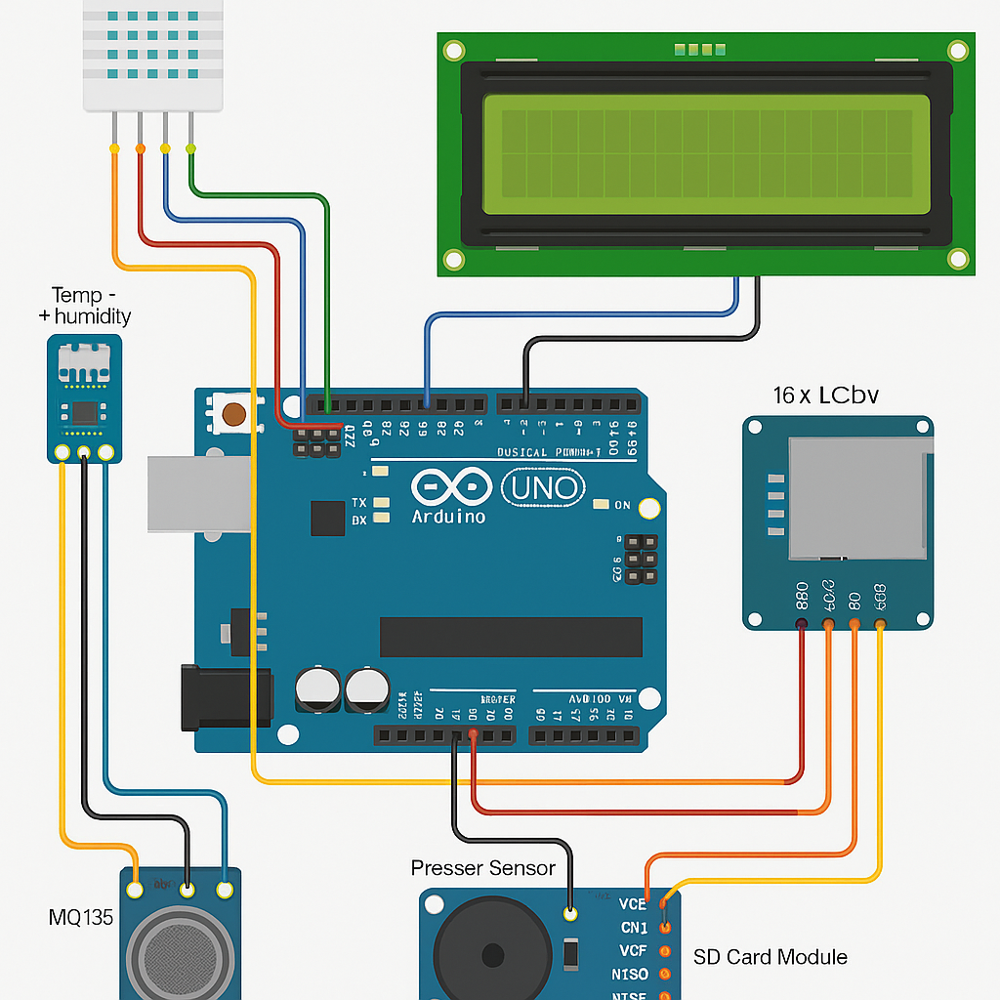

Hava İstasyonu
Tamamlandı



Proje Açıklaması
Bu projede, Arduino teknolojisini kullanarak çok yönlü bir Hava Durumu İzleme Sistemi geliştirdim. Sistem sıcaklık, nem, atmosferik basınç ve hava kalitesi gibi gerçek zamanlı çevresel parametreleri yakalayarak çevresel araştırmalar, akıllı tarım ve hava durumu trend analizi için güvenilir veriler sunuyor.
Temel Özellikler
- Gerçek zamanlı sıcaklık ve nem izleme
- Barometrik basınç ölçümü
- Hava kalitesi endeksi hesaplaması
- Veri kaydı ve depolama
- Grafiksel veri görselleştirme
Teknik Özellikler
Mikrodenetleyici
Arduino Uno
Sıcaklık Sensörü
DHT22
Basınç Sensörü
BMP280
Hava Kalitesi Sensörü
MQ135
Ekran
16x2 LCD
Depolama
SD Kart Modülü
Sistem Fonksiyonları
Sıcaklık İzleme
0,5°C hassasiyetle doğru sıcaklık okumaları
Nem Takibi
Bağıl nem ölçümü ±%2 hassasiyetle
Basınç Analizi
Hava tahmini için barometrik basınç izleme
Hava Kalitesi
CO2 ve hava kalitesi indeksi ölçümü